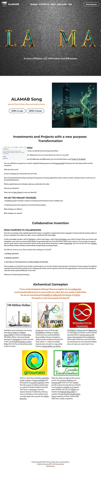
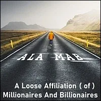
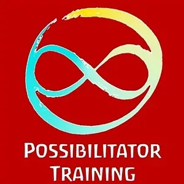
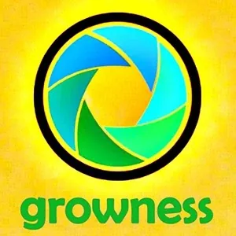

Original site appearanceopen full size ↗



ALAMAB
ALAMAB
-
A Loose Affiliation (of) Millionaires And Billionaires
- Investments and Projects with a new purpose:- Transformation- BEING HONEST WITH YOURSELF- Dedicating your life to making more money can quickly become boring and pointless. - Admitting diminished satisfaction from adding zeroes to your account grants you entry to a new path. - ALAMAB stands for ' - A Loose Affiliation (of) Millionaires And Billionaires', lyrics from the Paul Simon song '- The Boy In The Bubble'.- Your new affiliations emerge from a shared, magically healing purpose: inventing - gameworldsthat improve the well-being of Earth and her ecosystems.- What does this mean? - It means changing your money back into real value. - This is Transformational Investing: investing for the purpose of causing regenerative human cultures on Earth, creating a future in which you can be authentically proud. - Effective global teamwork is already underway, mostly below the radar. - What do you Stand for? - When will you - Take A Standfor what you Stand for?- WE USE TWO PRIMARY STRATEGIES- 1. Amplifying projects already in existence and doing transformational culture-building work. - 2. Organizing teams that originate new transformational projects. - Both strategies are effective. - Both strategies are required.
- Collaborative Invention- FROM COMPETING TO COLLABORATING- Since the core strategy of the capitalist patriarchal empire is competition, imagining that others engaged in Transformational Investing might not be your competitors, but rather your allies, can be a significant shift of paradigm. - A shift of paradigm includes a shift of - Worldview, a shift of self-image, a shift of- Survival Strategy, and a shift of Context. When any of these solid foundations upon which you stand change shape, the ground beneath your feet may seem to fall out from under you. Soon enough, new ground will form upon which to stand and interact with the world, but the interim discomfort is called a- Liquid State, and it can involve all of your- 5 Bodies(Physical Body, Intellectual Body, Emotional Body, Energetic Body, Archetypal Body).- The shift can, however, occur. There are three forces aiding you in this shift: - 1. EXTERNAL NECESSITY. - 3. INTERNAL NECESSITY: - 2. THE FORCE OF THE EVOLUTION OF CONSCIOUSNESS ON THE PATH: - We encourage you to let these forces do their work through you to serve the evolution and expansion of awareness in human beings. You might be surprised how powerful they actually are for catalyzing real results, and how generous they are with supporting your soul to come out and play in ways that make a positive difference in the world. - Welcome to Transformational Investing.
- Alchemical Gameplan- It turns out that bringing the following 5 Resources together into one- configuration- has the transformational power to invent ecstatic new culture that never existed on Earth before.- You are now encountering the- Possibility- of calling forth- this- Domain- of- Creation- .- The question is, what are you going to do about it?
 - Individuals and small groups are moving their - Point of Origininto- Radical Responsibilityfor effectively- Stewarding100 Million Dollars. They have already developed a- Gameplan (archived — not captured)for what to do with it. This way the- Earth Coincidence Control Office(E.C.C.O.) has an interesting reason to give it to them.
- Individuals and small groups are moving their - Point of Origininto- Radical Responsibilityfor effectively- Stewarding100 Million Dollars. They have already developed a- Gameplan (archived — not captured)for what to do with it. This way the- Earth Coincidence Control Office(E.C.C.O.) has an interesting reason to give it to them. - Archan Lawcomes to life through- Possibilitatorsbuilding out- Archaninfrastructure by combining Radical Responsibility, Universal Jurisdiction, Citizen's Arrest, and Bounty Hunting. The 'boys' will be boys held accountable. Impunity does not exist in a responsible Universe.- Irresponsibility is an illusion.
- Archan Lawcomes to life through- Possibilitatorsbuilding out- Archaninfrastructure by combining Radical Responsibility, Universal Jurisdiction, Citizen's Arrest, and Bounty Hunting. The 'boys' will be boys held accountable. Impunity does not exist in a responsible Universe.- Irresponsibility is an illusion.
- Possibilitator Trainingsupports- Edgeworkersin small- Teamsaround the world to develop absurdly effective- transformational skill levelsin- NonmaterialArchan- professionsthat modern culture has never even heard of. Just because you never learned it before does not mean you cannot learn it now.
- What is a Team that unleasehes - potentials,- knacks,- ecstasy, and- goup intelligencefor the purpose of- awareness expansionrather than the purpose of seeking material gain on a planet of limited material resources? That Team is a- Growness. Growness replaces Business in Archiarchy. Ordinary resource limitations of the material world no longer apply when you jack-into- Infinite Resources. - When the stakes are high and the answers are few, the - conscious- Nonlinearand- Unreasonableresources of your- Gremlinprovide massive leverage. But your Gremlin is only- trainedto- compete to winagainst other Gremlins. How can you- initiateyour Gremlin into- Radically Responsibleco-creation? Through- Gremlin Transformation School. Suddenly you have creative allies rather than sneaky competitors.
- When the stakes are high and the answers are few, the - conscious- Nonlinearand- Unreasonableresources of your- Gremlinprovide massive leverage. But your Gremlin is only- trainedto- compete to winagainst other Gremlins. How can you- initiateyour Gremlin into- Radically Responsibleco-creation? Through- Gremlin Transformation School. Suddenly you have creative allies rather than sneaky competitors.